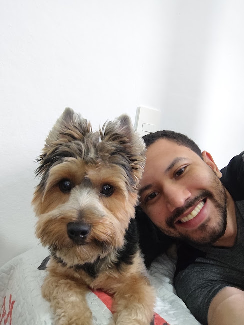

Gabriel C. Nápoles
Gabriel C. Nápoles é estudante da UFABC nos cursos de Bacharelado de Ciência e Tecnologia e de Engenharia de Informação. Seus interesses de pesquisa abrangem a área de processamento de imagem e eletrônica analôgica.
Sou natural de Belém (PA) e atualmente vivo em São Paulo (capital). Além dessas duas cidades, já vivi em Marabá(PA) e em Macapá (AP). Sou estudante de engenharia do curso de engenharia de informação na UFABC. Atualmente atuo como desenvolvedor de software em uma empresa de tecnologia, desenvolvendo API's e documentações técnicas.
Meus interesses pessoais incluem esportes como patinação street e, mais recentemente, escalada. Além disso, nutro um profundo interesse por cinema e produções de audiovisual independentes.